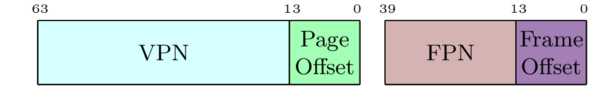

\documentclass[border=5pt]{standalone}
\usepackage{bytefield}
\usepackage{graphicx}
\usepackage{graphics}
\usepackage{xcolor}
\usepackage{subcaption}
\begin{document}
\definecolor{lightcyan}{rgb}{0.84,1,1}
\definecolor{lightgreen}{rgb}{0.64,1,0.71}
\newcommand{\colorbitbox}[3]{%
\rlap{\bitbox{#2}{\color{#1}\rule{\width}{\height}}}%
\bitbox{#2}{#3}}
\begin{bytefield}[bitwidth=2pt,bitheight=\widthof{~Sign~},
boxformatting={\centering\small}]{64}
\bitheader[endianness=big]{63,13,0} \\
\colorbitbox{lightcyan}{50}{VPN} &
\colorbitbox{lightgreen}{14}{Page Offset}
\end{bytefield} \hfill \break \newline
\definecolor{lightsomething}{rgb}{0.84,0.7,0.7}
\definecolor{lightsomething2}{rgb}{0.64,0.5,0.71}
\begin{bytefield}[bitwidth=2pt,bitheight=\widthof{~Sign~},
boxformatting={\centering\small}]{40}
\bitheader[endianness=big]{39,13,0} \\
\colorbitbox{lightsomething}{26}{FPN} &
\colorbitbox{lightsomething2}{14}{Frame Offset}
\end{bytefield}
\end{document}Created by David Li